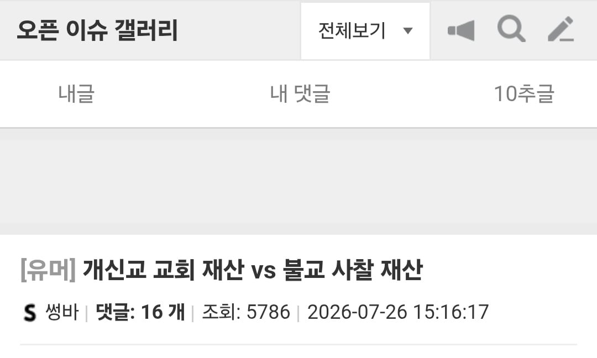
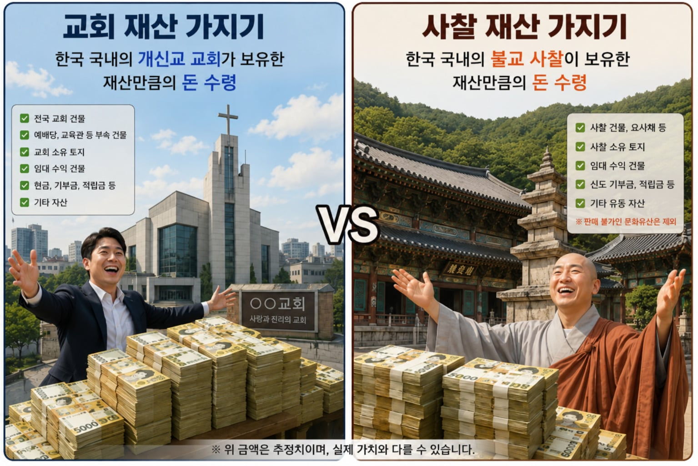
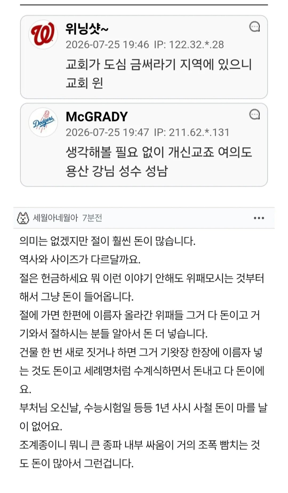
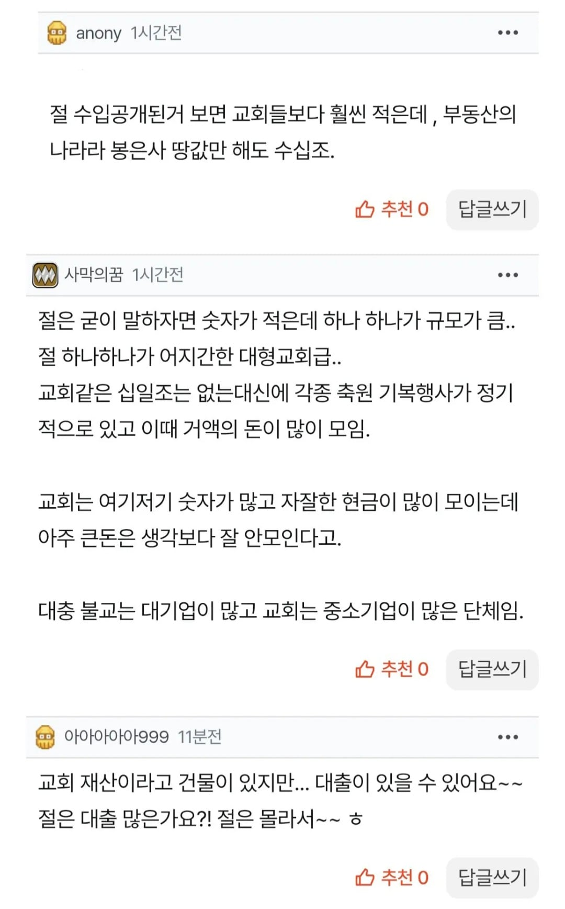

우리나라 불교가 가진 토지를 모르는구나 ㅋㅋㅋㅋㅋㅋㅋㅋ 기독교가 이길수가 없다
조계종이 보유한 토지 보유량을 사람들이 잘 모름 ㅋㅋ
국내 2위임
1위는 정부니까 사실상 1위임
개루살렘이여 요즘 종교전쟁 좆되네
맥날골라봐라
재산누적이야 기간도 있고 절이 압도적이지.
고려시대 도심지에 있던 절들 다 쳐내서 절이 돈이 없어 보일 뿐이지 실제로는 산 하나 가지고 있다
홍라희가 불교임
원불교
내기사가 더 최신임 ㅅㄱ
별 씨벌ㅋㅋ 니가 맞는것같다 그래...
원불교 불교 짬뽕인데 홍라희여사 어머니가 원불교도였어서 어렸을때부터 원불교에 독실했었음
작은절도 소수 네임드들이 큰 금액을 보시 하기도 하고 거기다 요즘은 제사를 없애고 절에 맡기는 추세라 절도 만만치 않음
커뮤 기준으론 대형교회만 나오니까 그렇지
대부분의 교회는 돈도 별로 없고 그나마도 20년 정도마다 노후된 교회 새로짓고해서 생긴 빚이 대부분일걸
거기다 정상적인 교회들은 대부분 헌금 들어온거 회계잡아다가 사용처 정해놔서 정해진 수선비나 장기 보관금 말고는 크게 많이 모으지도 않고 봉사비에 예산 꽤 많이 잡아둬서 어디 기부하거나 봉사활동 하러 나가거나 할때 돈 많이 쓰더라고.
안그런 교회도 많지만.
짤에는 판매불가 문화유산 제외라했는데ㅋㅋ
문화유산 포함하면 그냥 절간 압승
그리고 유서깊은 사찰에서 재건축하면 가끔 수백년된 나무기둥 나오는데 바둑판 만들어서 팔면 중국애들 입에 거품 물고 사감
교회는 높으신분들 얽혀있어서 돈 더 많지않아?
그건 핵심교회면 그렇지 여의도 순복음교회 이런 메이져면
불교 앵간하면 ㅈㄴ 돈많음
위폐 하나 올리는거에 몇천씩한다
기왓장에 이름세기는것도 돈
연등 길거리에 세워놓는거에 이름넣는것도 돈
무슨 부적처럼 길게 달아놓는 것도돈
동네 작아보이는 절도 주지 바뀔때 패싸움남
쥬지는 중요하니까
액수는 중요하지 않다
개독이 거지꼴 되는걸 볼 수 있다
사찰 돈 좆되게 많이범 불공드리러 오는 나이많은 보살님들만 스캔해도 알수있음ㅋㅋㅋ
절이 압승임. 유명 교회들만 현금흐름이 좋고 어느정도 재정이 뒷받침 되는데, 절은 듣도보도 못한 곳이 통장에 예금만 수십억 + 토지라서 비교 대상이 안됨.
단순하게 누가 더 오랫동안 기득권과 대중에게 메이저 종교였는지 생각해보면 답나옴.
개신교는 생각보다 돈 없음.
대형교회 몇군데가 독점하는 구조고 동네 작은 교회같은건 목사들 평일에는 직장다니고 주말에는 목회하고 그런곳이 대부분임.
심지어 대형교회들은 버스까지 굴리면서 옆동네까지 사람 긁어오느라 작은 교회들 폐업하고 사라지는 추세.
그런 대형교회일수록 돈에 환장해서 십일조니 건축헌금이니 온갖 개같은거 다 뜯어낼라고 혈안이 되있는게 한국 교회 현실임.
여의도 순볶음교회면 비빌만하지않나, 저번에 목사 생파를 잠실운동장에서 하던디
절이 압승같은데?